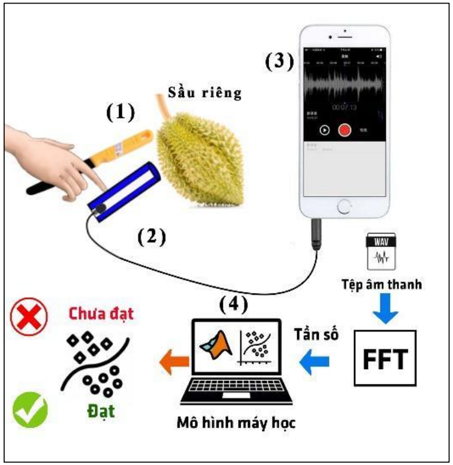

Classification of durian ripeness before harvest using low-cost acoustic solutions and machine learning models
View Article opens the journal or record page. Download File opens the file on Google Drive. Back to Home returns to the main page.
